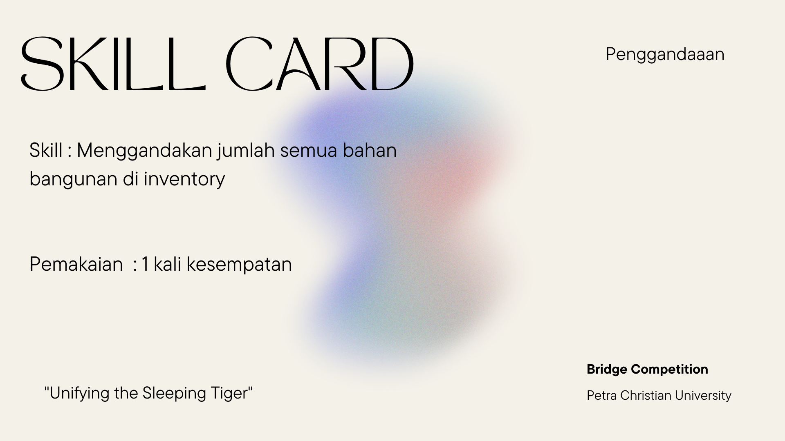

Selamat! kamu berhasil menemukan treasure skill Penggandaan. Cara mendapatkan skill nya bisa kamu tanyakan di Pos Penukaran Skill. Tukarkan di pos penukaran dan dapatkan hadiahnya segera sebelum kehabisan, karena hanya terbatas untuk beberapa kelompok aja lho!